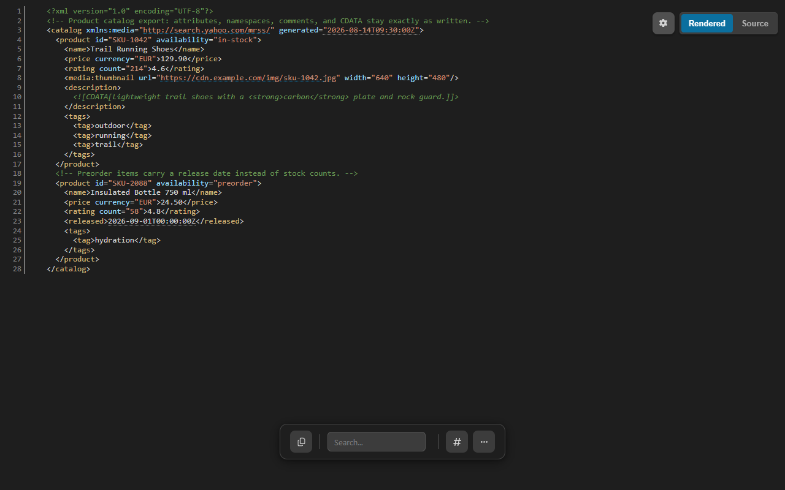

The XML formatter that refuses to change your data
Re-indenting XML is not free: mixed content, preserved whitespace, internal DTD subsets, and quoted markup can all change meaning under a pretty-printer. CodePrettify parses strictly and, in the browser extension, returns the source unchanged whenever a rewrite could change data. Validation with line and column, folding, feed rendering, Table View, and XML to JSON conversion all run on your device.
A product catalog export with attributes, namespaces, comments, and CDATA — strictly validated, foldable, and exactly as written.
Data safety
An XML formatter that would rather do nothing than do damage
In XML, whitespace inside an element can be data, a CDATA section can hold markup that must stay markup, and an internal DTD subset can define entities the rest of the document depends on. A formatter that re-indents through all of that returns tidy XML that no longer says the same thing. The extension checks first — and when a rewrite could change data, it hands your bytes back.
The file you open
Markup where whitespace and quoting carry data
The description holds quoted markup inside CDATA, and xml:space="preserve" declares that the note's double spaces are intentional.
Because a rewrite could change the CDATA content or the preserved whitespace, formatting returns the source untouched. You still get highlighting, folding, links, and hints.
In the browser extension, formatting avoids mixed content, preserved whitespace, internal DTD subsets, and quoted markup where a rewrite could change data — and its “minification” is byte-preserving, because whitespace-only text nodes may matter. The Windows app makes the opposite trade openly: it reformats any well-formed document, and its minification strips comments and collapses whitespace. Same strict parser, two clearly stated contracts.
Hands-on tutorial
Work through a real document or feed, end to end
Use the catalog above, an API response, a sitemap, or any RSS or Atom feed you actually read. The goal is a strict verdict and a confident reading — not a rewritten file.
Open the XML document
In Chrome or Edge, open a raw .xml, .rss, or .atom file or URL — supported responses activate automatically, even when a compatible MIME type arrives without a recognizable filename, and ordinary web pages are left alone. In the Windows app, open the file or press Ctrl+N for Paste & Prettify and keep Auto-detect. XML, RSS, and Atom open in the Rendered view by default.
Read the strict verdict
Parsing is strict, and that is the point of an XML validator: the formatting indicator reports whether formatting succeeded, and the validation alert names an exact line and column when the parser can locate the problem. A well-formed export earns a clean verdict; a broken one tells you where it broke.
Flip Rendered and Source
Press Ctrl+B to switch between Rendered — the working view with highlighting, folding, and hints — and Source, the untouched text. In the extension, when a rewrite could change data the two views carry the same bytes; the difference is presentation, never content.
Fold to the element that matters
Use the gutter fold controls for one element, or More Actions → Collapse All / Expand All for the whole tree. Line numbers, word wrap, and the minimap can be enabled independently.
Jump with Document Navigator
Open Document Navigator to see the element outline and jump to any entry's source line. The extension exposes it for XML/RSS; the Windows app supports XML, RSS, and Atom outlines.
Use the inline hints
Safe links become clickable, timestamp-looking values such as generated="2026-08-14T09:30:00Z" get human-readable hints, and encoded values are hinted too. These are reading aids layered on top of the document — the text itself is never altered.
Search and go to line
Press Ctrl+F and search plain text, or wrap the query as /pattern/flags for a regular expression. Ctrl+G opens Go to Line when a validation alert or a teammate points at a position.
Put repeating elements in Table View
When a structure repeats — items in a feed, products in a catalog — open Table View from More Actions. Sort by clicking a column, filter globally or per column, drag columns to reorder, and export a selection as CSV or JSON in the current column and sort order.
Count what the document contains
Open Statistics & Diagnostics: for XML and feeds, Statistics reports element, attribute, namespace, text, comment, and CDATA counts, and Diagnostics can flag feed issues alongside its general warnings. Comment count zero on a file that should carry comments is worth a question.
Before trusting an XML file or feed
Run through this list before shipping, importing, or replying to the producer.
The formatting indicator reports the document as valid, with no line-and-column alert outstanding.
An unchanged formatted view in the extension is read as a guard, not an error.
Rendered and Source agree on the value you care about.
Repeating structures were reviewed in Table View before any CSV export.
Statistics counts — elements, attributes, namespaces, comments, CDATA — match what you expected the producer to send.
Anything converted to JSON was round-tripped back with Reverse before the mapping was trusted.
Capabilities
What the XML viewer adds beyond strict validation
Strict validation
Strict parsing, clear verdict
Exact line and column when locatable
Formatting indicator on every document
Extension guards
Mixed content
Preserved whitespace
Internal DTD subsets
Quoted markup
When any of these could change under a rewrite, formatting returns the source unchanged — and minification is byte-preserving.
Windows app contract
Reformats any well-formed document
Minification strips comments and collapses whitespace
Paste & Prettify auto-detects XML
A deliberate rewrite when you ask for one — keep the original if comments or spacing carry meaning.
Reading aids
Rendered/Source views, folding
Safe clickable links
Timestamp and encoded-value hints
Document Navigator element outline
Feeds and tables
RSS and Atom feeds render — a local RSS viewer
Table View for repeating XML/RSS structures
Sort, filter, reorder, export CSV/JSON
CSV needs a repeating structured element; XML tabular projection is best-effort and can be lossy.
JSON Repair & Transform accepts XML/RSS via the ordered JSON representation
Settings toggle XML/RSS folding and clickable URLs

The same catalog in dark mode — Auto, Light, and Dark themes are a Settings toggle away.
XML to JSON
An XML to JSON converter that keeps every node — and reverses
Plain JSON has no natural place for attributes, comments, CDATA, processing instructions, or sibling order. Instead of quietly dropping them, the Data Converter uses an ordered $xml model that makes each of them explicit — which is why the conversion can round-trip back to the original XML.
XML input
Two attributes, a comment, exact text
Load it with Use document, or paste it into the Convert tab.
<product id="SKU-1042">
<!-- price includes VAT -->
<price currency="EUR">129.90</price>
</product>
JSON output — excerpt
Order, attributes, and the comment made explicit
Trimmed for reading: whitespace-only text nodes and namespace metadata are elided here. Note that 129.90 stays text — nothing guesses types on your behalf.
Open Data Converter from More Actions, the Command Palette, the Tools menu, or the extension launcher, and choose Use document on the Convert tab.
2
Convert — or reverse
Pick XML → JSON and press Convert. Reverse moves the output into the input and selects JSON → XML, which reconstructs the original markup from the $xml mapping.
3
Take the result with you
Copy and Download sit beside the output. Operations proven incompatible with the input are disabled with a reason instead of failing silently.
i
Both directions, honestly bounded.
XML → JSON preserves attributes, namespaces, text, CDATA, comments, processing instructions, and node order. JSON → XML also accepts plain JSON, mapping JSON types into a namespace-aware XML representation. Bounds: 10 Mi characters of input and 32 Mi characters of output, processed entirely on your device.
Decision guide
Two products, two contracts — know which rewrite you asked for
What you see
What it means
Best next action
Extension formatting returns the document unchanged
A guard applied: mixed content, preserved whitespace, an internal DTD subset, or quoted markup could change data under a rewrite.
Treat it as a verdict, not a failure — keep reading with folding, hints, and the Navigator.
The extension's Minified copy equals the original
XML minification in the extension is byte-preserving, because whitespace-only text nodes may matter.
Use the Windows app when you deliberately want whitespace collapsed.
The Windows app reformatted a file the extension left alone
The app reformats any well-formed document — that is its stated contract.
Compare old and new in Text mode before overwriting the original.
App minification removed the comments
The app's minification strips comments and collapses whitespace by design.
Keep the original file whenever comments or spacing carry meaning.
A validation alert with a line and column
Strict parsing located a syntax error at that position.
Press Ctrl+G to jump there and fix the source.
Compare offers only Text mode for two XML documents
Semantic compare covers JSON, JSONC, JSON Lines, YAML, and TOML — not XML.
Compare as text, or convert both sides with XML → JSON first for a structure-explicit view.
Table View or CSV export refuses the document
Table View needs a repeating structured element, and XML tabular projection is best-effort and can be lossy.
Check that a repeating element exists; use XML → JSON when you need every node kept.
FAQ
XML formatter questions
Why does formatting sometimes return my XML unchanged?
Because a rewrite could change what the document means. In the browser extension, formatting checks for mixed content, preserved whitespace, internal DTD subsets, and quoted markup, and returns the source unchanged whenever a rewrite could change data. An unchanged result is the guard working, not a failure.
Can it convert XML to JSON and back?
Yes. The Data Converter's XML to JSON operation uses an ordered $xml model that preserves attributes, namespaces, text, CDATA, comments, processing instructions, and node order, and Reverse reconstructs the original XML from that mapping. Limits are 10 Mi characters of input and 32 Mi characters of output.
Is minified XML safe?
It depends on the product. In the browser extension, minification is byte-preserving because whitespace-only text nodes may matter, so the minified copy equals the original. The Windows app's minification strips comments and collapses whitespace — use it only when you know the document relies on neither.
Is my XML uploaded anywhere?
No. Formatting, validation, conversion, statistics, and comparison run on your device, and the extension works without an account. Files and feeds are processed locally; nothing is sent to a server.
Open the file or feed, get a strict verdict with line and column, and know that every byte you copy out is a byte you can defend — on your own device, upload-free.